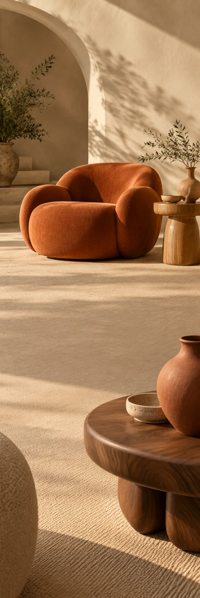

FORME
InterieurCollectie-edit
FORME / THE SOFT EDIT
Ruimte
voor zacht.
Bekijk de edit FORME / VAN DICHTBIJ
Minder recht.
Meer gevoel.
Een stoel waar je in wegzakt. Een tafel met een zachte lijn. Ontdek vormen die niet om aandacht vragen, maar haar vanzelf krijgen.
01Ronde lijnen
02Warm hout
03Zacht zitten
Maak ruimte.
Voor jouw thuis.
Een ronding. Een kleur. Een heel ander thuis.
Bekijk de edit